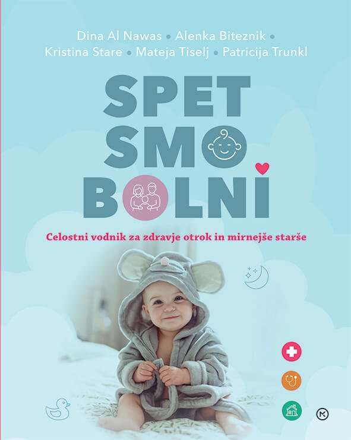

Vir naslovnice: Mladinska knjiga ZaložbaSpet smo bolni
Celostni vodnik za zdravje otrok in mirnejše starše
Dina Al Nawas, Alenka Biteznik, Kristina Stare, Mateja Tiselj in Patricija Trunkl
Pet pediatrinj je v tem priročniku zbralo razumljive nasvete o zdravju otrok, od prvih ur po rojstvu do najpogostejših otroških bolezni. Knjiga staršem pomaga presoditi, kaj lahko storijo sami, kdaj lahko otroka mirno opazujejo in kdaj je čas za zdravniško pomoč. Pridite jo prelistat v Knjižnico Savsko naselje.
Dodatek: zapis v COBISS+